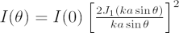
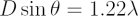
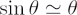
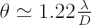

When a point source, such as a star, is observed through a telescope with a circular aperture, the image is not a point source – it is a disk surrounded by a number of very faint rings. These rings are produced by Fraunhofer Diffraction of the light by the circular aperture. In this case, the irradiance is:

where I(0) is the peak irradiance at the centre of the diffraction pattern, D = 2a is the diameter of the aperture, k is the wave number and J1(u) is the first order Bessel function.
The central region of the profile, from the peak to the first minimum, is called the Airy disk. It has an angular radius given by:

Using the small angle approximation that

, the angular radius of the Airy disk is
According to the Rayleigh Criterion, two point sources cannot be resolved if their separation is less than the radius of the Airy disk. The Airy disk is named for the English astronomer Sir George Biddell Airy, who served as the seventh Astronomer Royal from 1835-1881.